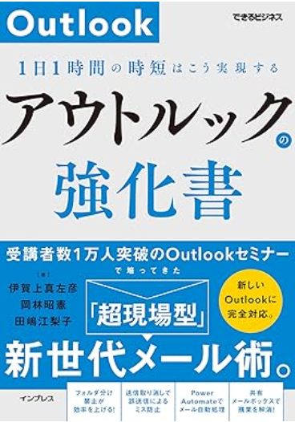
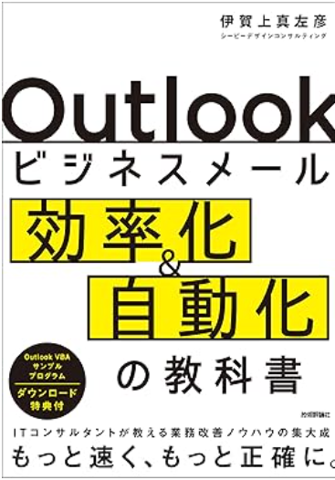

お知らせ
- Outlook研修、オンライン・対面ともに対応可能です
- 集中力・生産性テーマの講演依頼を受付中です
- 企業課題に合わせたカスタマイズ研修が可能です

現場で使える仕組みをつくる
GAコンサルティング 研修事業部は、Outlookを軸にした業務改善、集中力・生産性の知見、 企業向け研修を通じて、個人依存の働き方を再現可能な運用に変えます。
大企業、IT企業、金融機関、外資系企業などで使われる、最新のAIやIT、人体の仕組みを活用し、仕事の効率と質、社員の働き甲斐を高めたい企業向けです。
Outlookで1日1時間を取り戻す、集中時間を高め知的労働の効率を5倍に、非エンジニア向け業務自動化研修・コンサルティング。
ITエンジニア、ITコンサルタント、大規模コールセンター向けシステム開発、AI、経営など幅広い経験を活用した独自視点の書籍を多数執筆。
Outlookや集中力に関する知見を、読み物で終わらせず、日々の仕事に落とし込める形で提供します。
新入社員から管理職まで、対象者や課題に合わせた研修を設計し、翌日から使える内容に仕上げます。

著書
Amazonランキング1位
2026年時点で唯一の「新しいOutlook」に対応した書籍です。1日1時間の業務効率化がキーワード。大規模事務職場での管理職・開発リーダーとしての10年の経験に基づいた実践的テクニック。
Outlookを「使っている」状態から、「成果につながる武器として使いこなす」状態へ引き上げるための一冊です。

既刊
「クラシックOutlook」をお使いの方はこちら！インボックスゼロなど海外のメールテクニックをご紹介。誤送信低減からVBAでのメール自動処理まで幅広く対応。
講師
株式会社G.A.Consulting 執行役員
業務自動化研究所 代表
AI・業務革新・業務自動化コンサルタント / エンジニア
専門領域：AI・RPA・VBA・Python・BPO・企業再建・新規事業立ち上げ・コールセンター運用・3Dプリント
40歳を前にリーマンショックで勤めていた工場が無くなり、コールセンターオペレーターとして再出発。事務職としての課題を補うためにExcelやOutlookを徹底的に学び、IT教育、大規模業務の設計、プログラミングによる業務効率化・自動化を得意分野としてきました。
現在はAIコンサルタントとして企業の革新を支援します。
睡眠、食事、運動に焦点を絞り、アスリートの体調管理法でビジネスを加速させる方法を学びます。
集中力を極限まで高め、知的労働の効率を極限まで高めます。働く人のストレスを低減し、幸福感を高めることでやる気のアップや離職防止も期待できます。
日本唯一（当社調べ）の新しいアウトルック完全対応研修。新入社員向け
同じ講師が対応します。参加人数が少ない場合、こちらがお得です
メール対応に時間を取られて、本来の仕事が進まない
誤送信が多い
研修を実施しても現場で定着しない
職場でのストレスが多く、離職率が高い
立ち上げるビジネスがことごとく失敗
優秀な新人を獲得したい